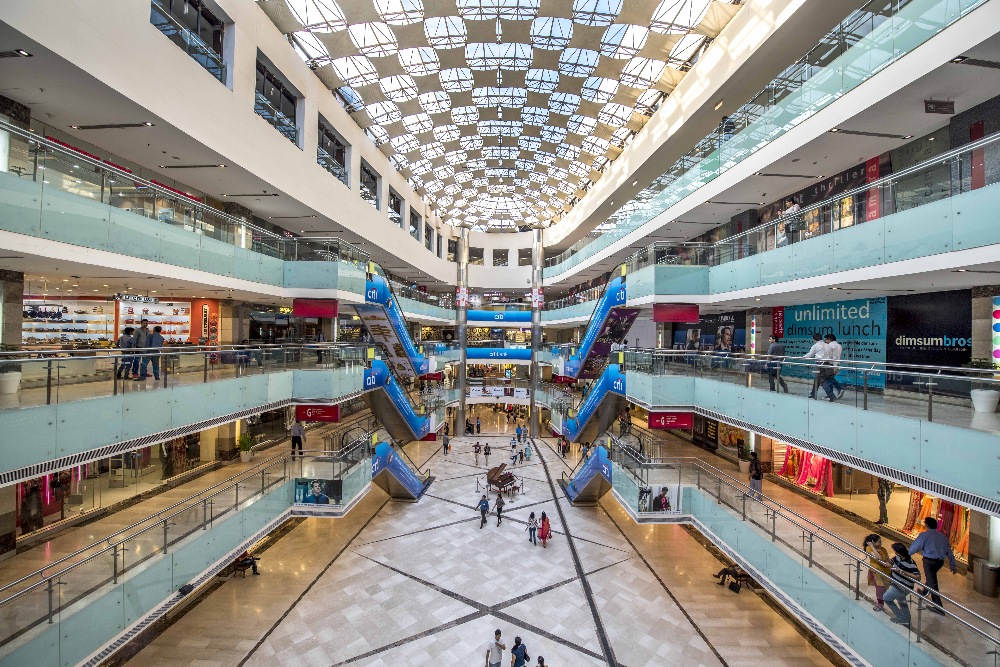

Visit Gurugram
Gurugram perfectly bridges its sacred, ancient past with a hyper-futuristic reality. Rooted in the Mahabharata era as the legendary "village of the Guru"—a patch of land gifted to the royal mentor Guru Dronacharya—the city has undergone a staggering transformation from a sleepy agricultural settlement into India's premier "Millennium City".
Top three activities to do at Gurugram:

Visit Sheetla Mata Temple
Shri Mata Sheetla Devi Mandir is one of the most revered and historic Hindu pilgrimage sites in Haryana, located in the heart of Old Gurugram. Dedicated to Mata Sheetla Devi, an incarnation of Goddess Durga, the temple attracts millions of devotees every year, particularly during the bi-annual Chaitra and Ashvin Navratri festivals.

Visit Ambience Mall
Ambience Mall in Gurugram is one of India's largest and most vibrant premium shopping destinations. Spanning a massive 1.8 million square feet along the Delhi-Gurugram Expressway, it features an incredible one-kilometer stretch of retail and entertainment space on every single floor.

Visit Aravali hill range
The Aravalli Range (also spelled Aravali) is one of the oldest geological fold mountain ranges in the world. While the entire range spans roughly 670 km across northwestern India, the section running through Gurugram acts as a vital "green lung" for the National Capital Region (NCR), providing a stunning natural backdrop to the city's modern concrete jungle.

Your Guide
"I have lived at Gurugram for 25 years, I can show you all of it's best parts and hidden secrets"
Vikas T